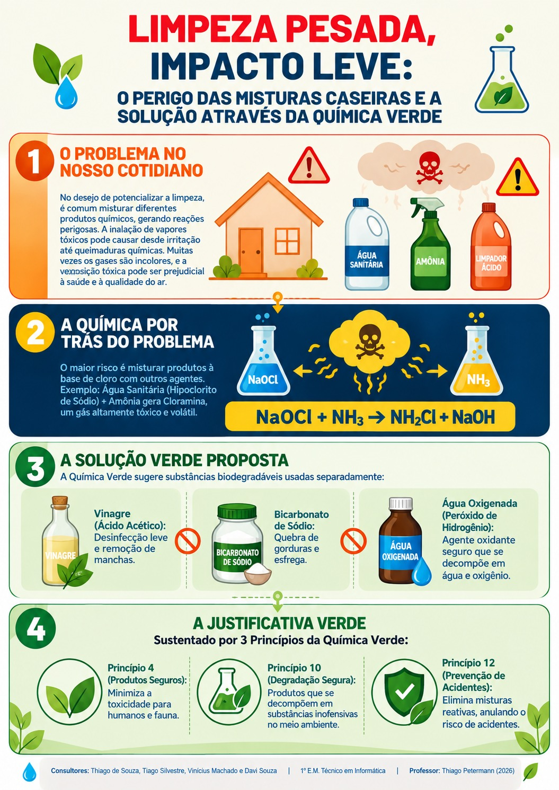

O perigo das misturas caseiras e a solução pela Química Verde
Trabalho de Química — 1º E.M. Técnico em Informática
Thiago de Souza · Tiago Silvestre · Vinicius Machado · Davi Souza
Professor: Thiago Petermann · 2026
Quem nunca pensou que "misturar dois produtos limpa melhor"? Só que essa ideia é perigosa. Ao juntar produtos diferentes, podem se formar gases tóxicos que a gente nem vê — e só percebe quando já está sentindo ardência no peito, tosse ou falta de ar.
O caso mais clássico é misturar água sanitária (hipoclorito de sódio) com produtos que têm amônia, como alguns limpa-vidros. A reação libera cloramina, um gás muito irritante e perigoso.

Nosso infográfico explicando o problema e a proposta da Química Verde.
Fizemos um vídeo curtinho explicando a química por trás do problema e como a Química Verde pode ajudar. Dá uma olhada! 👇
(substituir o link pelo vídeo do grupo)
Preparamos 5 perguntas sobre o tema. A ideia é simples: se o professor de Química errar alguma, a gente ganha moral! 😄
1. Qual é a fórmula química da cloramina, gás tóxico formado ao misturar água sanitária com amônia?
2. Se misturarmos água oxigenada (H₂O₂) com água sanitária (NaClO), o que ocorre?
3. Qual princípio da Química Verde está mais diretamente ligado à ideia de "eliminar misturas reativas que podem causar acidentes"?
4. Por que a Química Verde propõe usar vinagre, bicarbonato e água oxigenada separadamente e não misturados?
5. Sobre a água sanitária (hipoclorito de sódio), qual afirmação está correta?